Resistor
O resistor controla a passagem de corrente elétrica.
Ele é muito usado com LEDs para evitar que queimem.
Lei de Ohm:
V = R × I
- V = tensão
- R = resistência
- I = corrente

Capacitor
Armazena energia elétrica temporariamente.
Usado em filtros, fontes e estabilização de circuitos.

LED
LED significa Diodo Emissor de Luz.
Transforma energia elétrica em luz.
Muito usado como indicador luminoso.
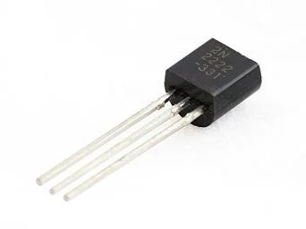
Transistor
Funciona como chave eletrônica ou amplificador.
É um dos principais componentes da eletrônica moderna.
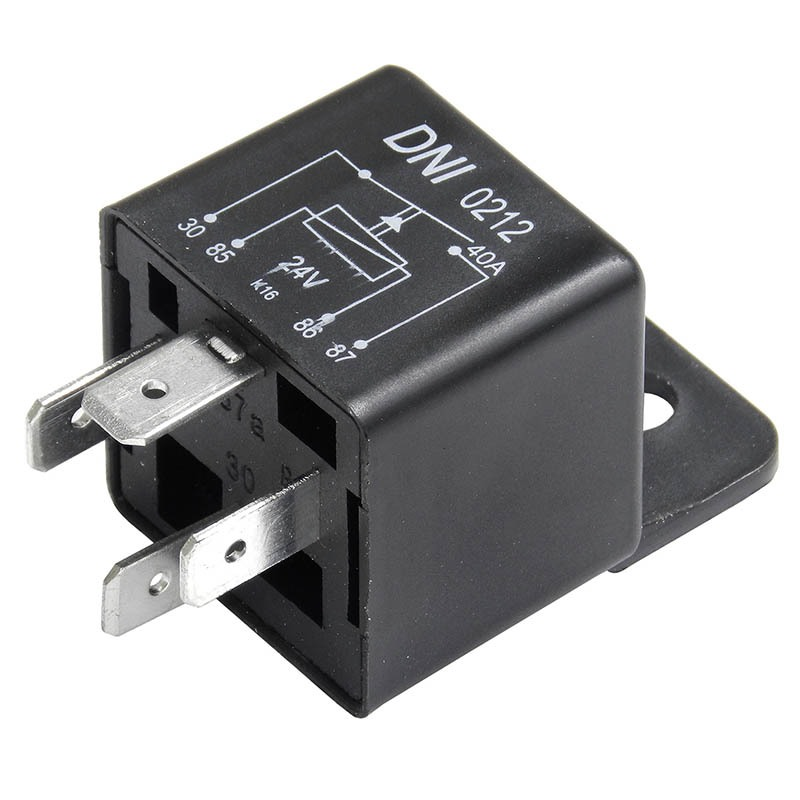
Relé
Permite controlar dispositivos de alta tensão usando baixa tensão.
Muito usado com Arduino e automação.
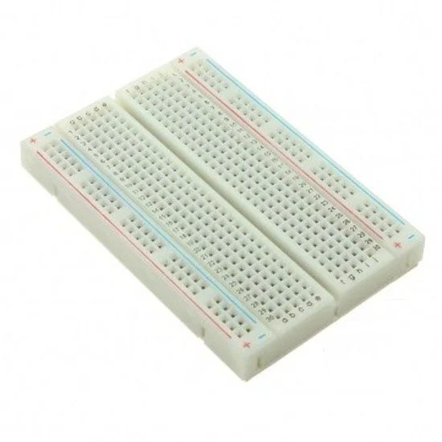
Protoboard
Placa usada para montar circuitos sem solda.
Ideal para testes e aprendizado.

Jumpers
Cabos usados para conectar componentes.
Muito utilizados em protoboards.
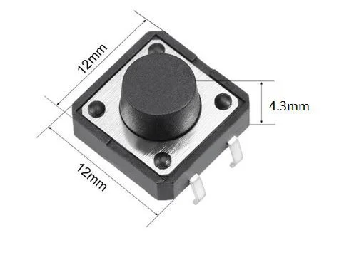
Push Button
Botão usado para enviar comandos ao circuito.
Exemplo: ligar e desligar sistemas.
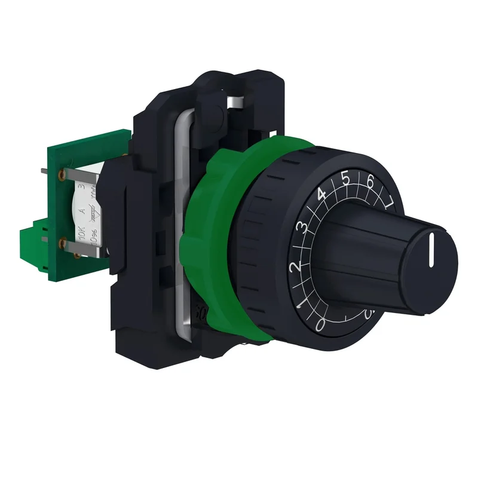
Potenciômetro
Resistor variável usado para controle de tensão.
Exemplo: controle de volume.
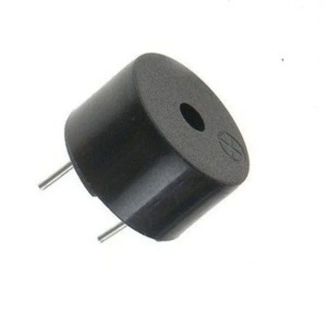
Buzzer
Emite sons e alarmes.
Muito usado em projetos de aviso sonoro.
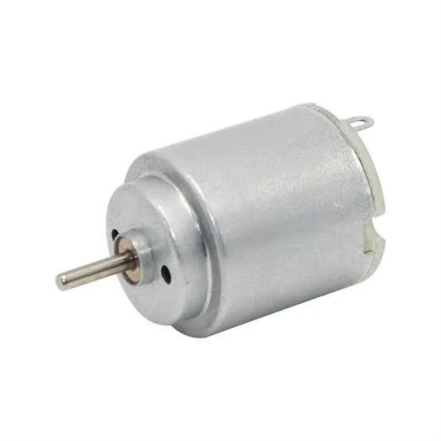
Motor DC
Transforma energia elétrica em movimento.
Muito usado em robótica.
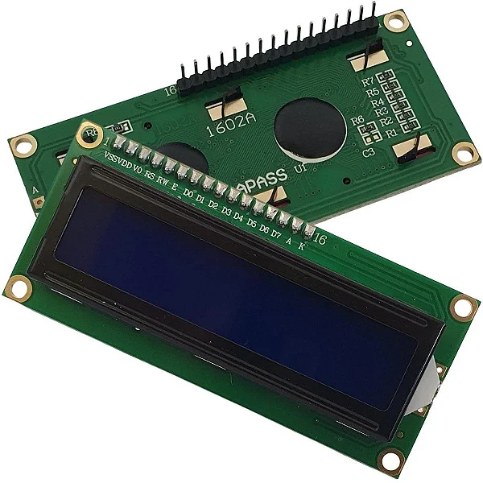
Display LCD
Usado para mostrar informações.
Exemplo: temperatura, textos e números.
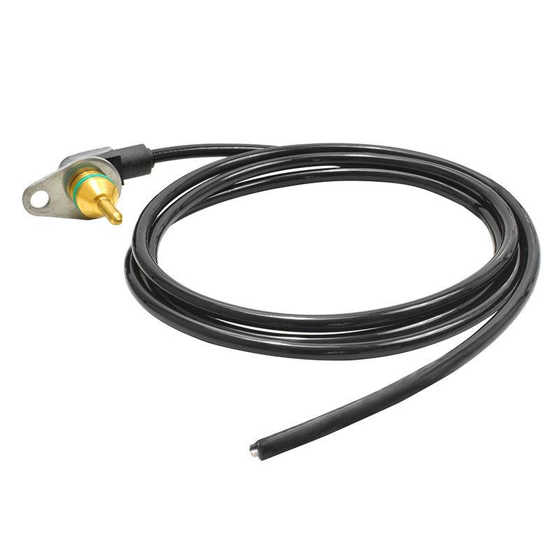
Sensor de Temperatura
Mede a temperatura do ambiente.
Muito usado em automação e monitoramento.

LDR
Sensor que detecta luminosidade.
Sua resistência muda conforme a luz.
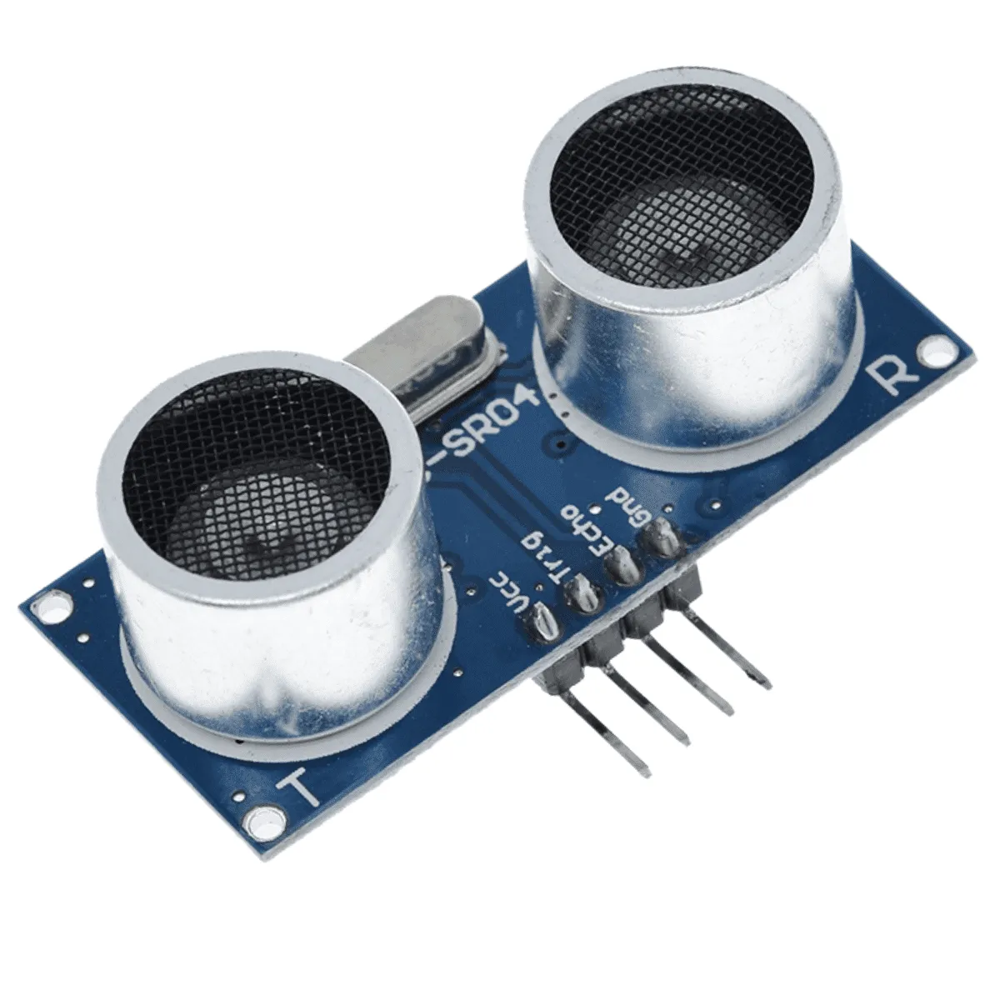
Sensor Ultrassônico
Mede distância usando ondas sonoras.
Muito usado em robôs e sensores de obstáculos.
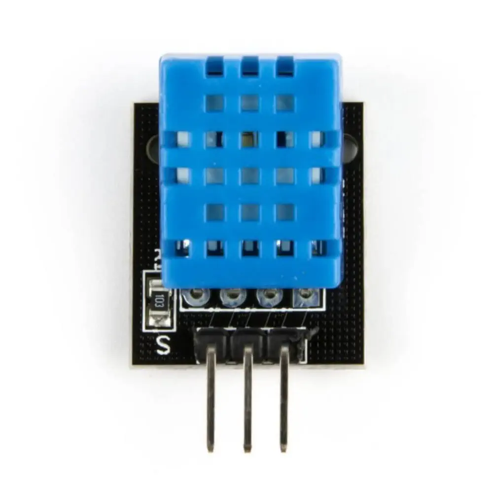
DHT11
Sensor de temperatura e umidade.
Usado em projetos climáticos.
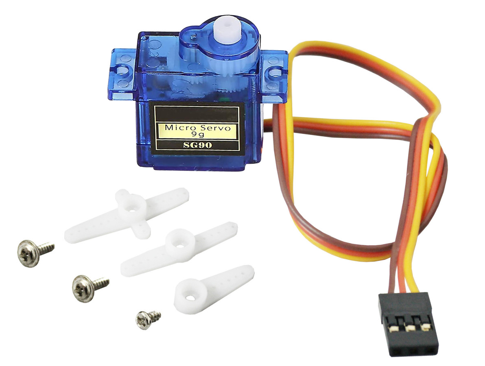
Servo Motor
Motor com controle preciso de posição.
Muito usado em braços robóticos.
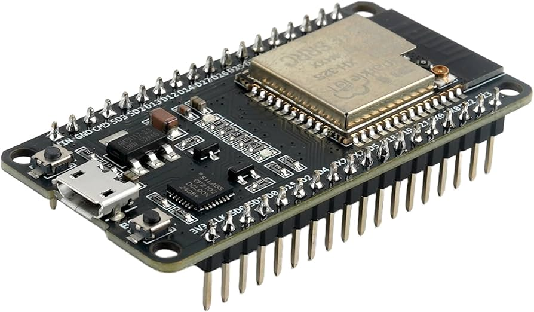
ESP32
Microcontrolador com Wi-Fi e Bluetooth.
Muito usado em IoT e automação.
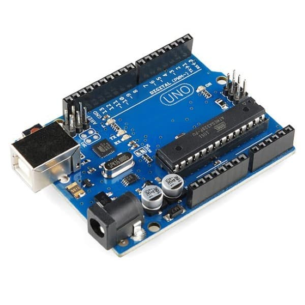
Arduino
Plataforma de prototipagem eletrônica.
Muito usada para aprender programação e eletrônica.